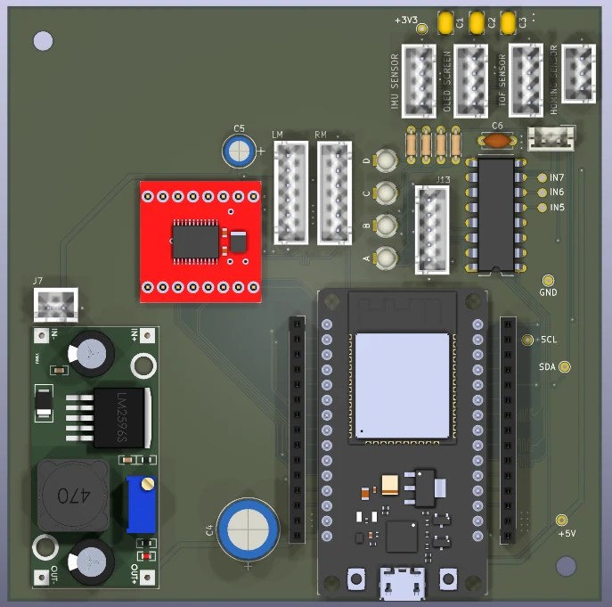
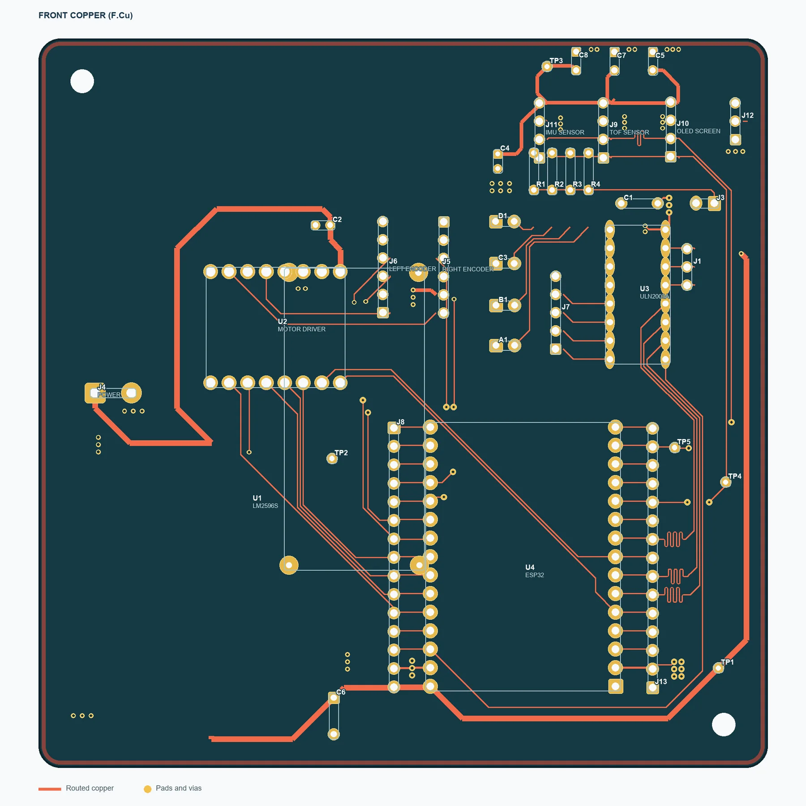
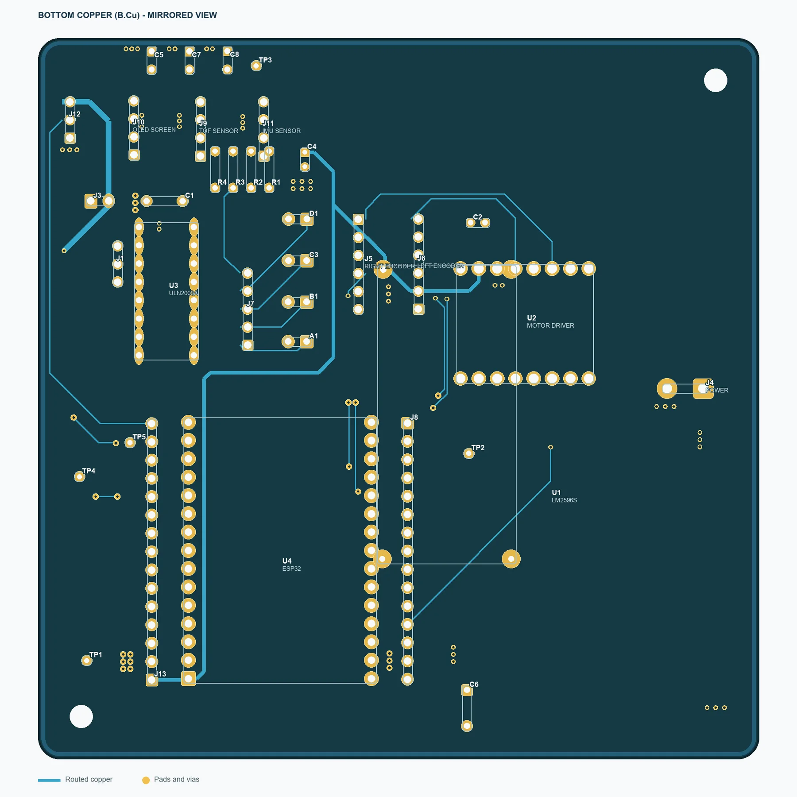
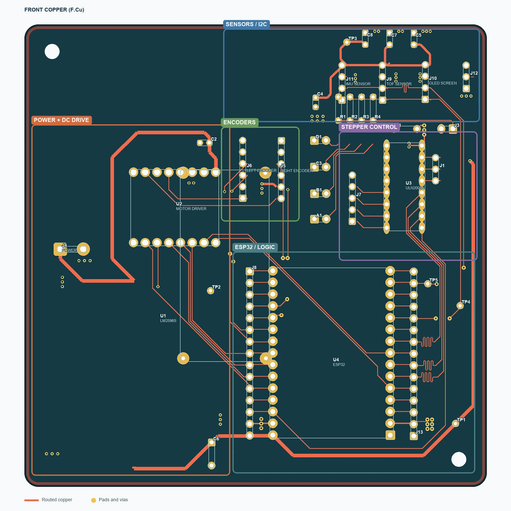
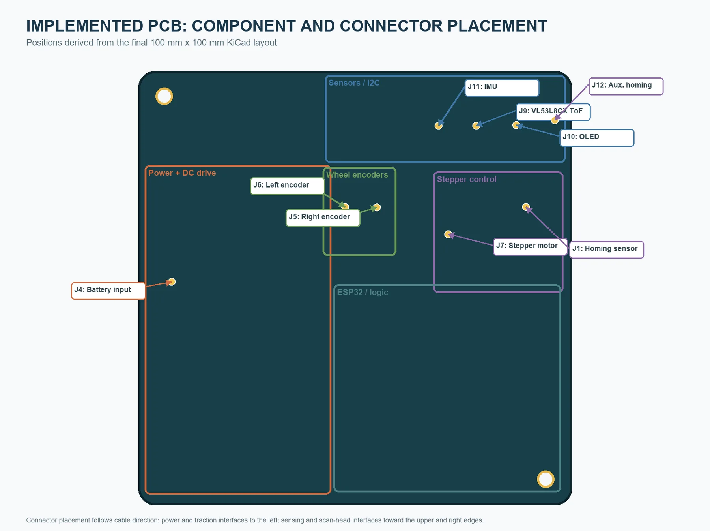
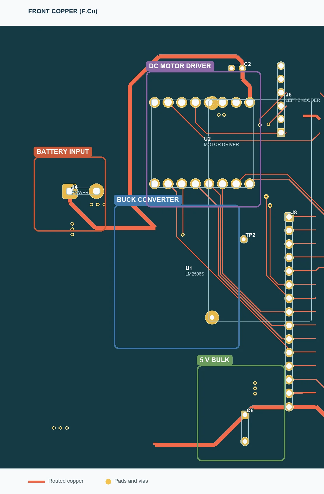
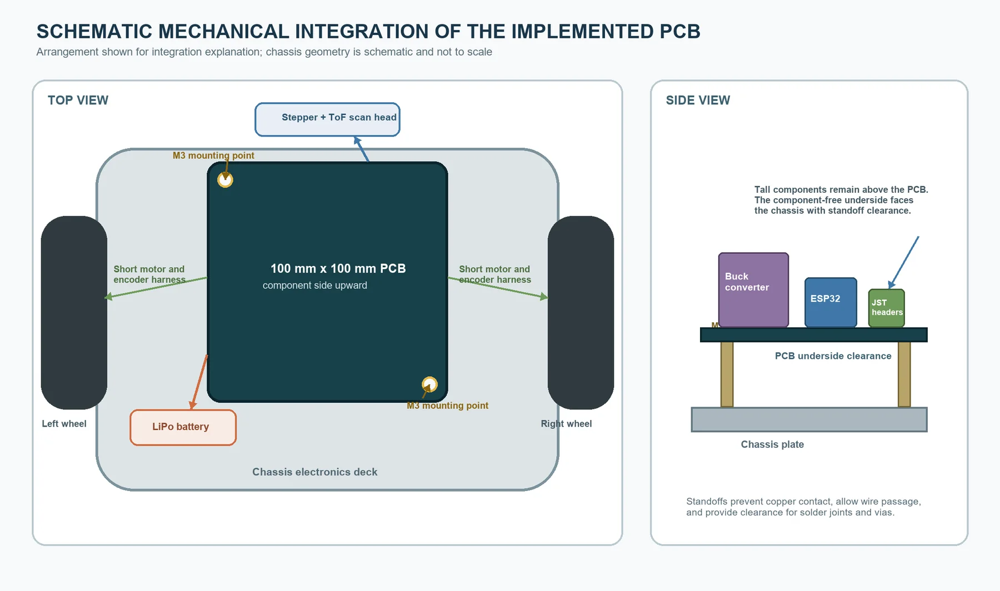
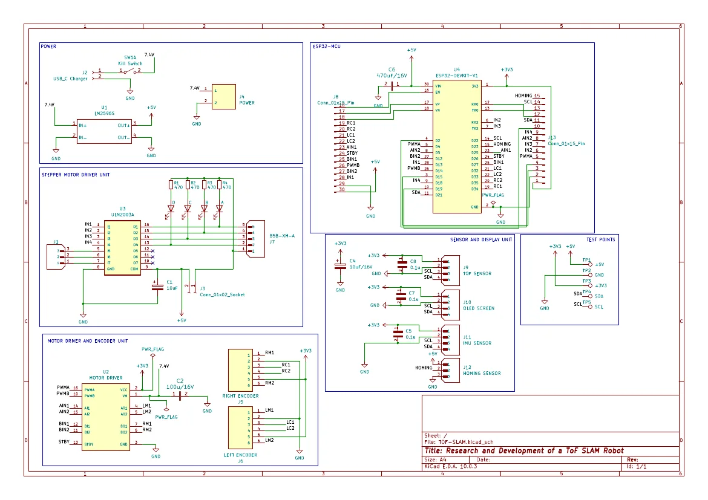

Reliable interconnects
Dedicated headers replaced repeated manual wiring between the robot subsystems.
PCB development / Stage 01
The implemented two-layer board that replaced loose prototype wiring and consolidated the robot's power, motion and sensor interfaces.

The early robot used temporary point-to-point connections while the architecture was still changing. That was useful for initial integration, but vibration, connector movement and repeated rewiring made it difficult to maintain a dependable mobile platform.
I designed this PCB to give every subsystem a defined connection and physical location. It brought power conversion, motor control, stepper drive, the ESP32 development module and sensor headers onto one board that could be mounted directly inside the robot.
Dedicated headers replaced repeated manual wiring between the robot subsystems.
Power, drive, logic, sensing and stepper sections were grouped by role.
Indicators and labelled test points support assembly checks and debugging.
The board outline and connectors were developed against the chassis envelope.
Layout development
All components are placed on the front side. The two copper views show the routed network, while the zoning view explains how the board was organized around the robot interfaces.




Board details


ESP32-DEVKIT-V1 development module on two socket rows.
7.4 V battery input, kill switch, USB-C charger interface and LM2596S 5 V conversion.
Dual DC motor-driver module, left/right encoder connectors and ULN2003A stepper driver.
Headers for the VL53L8CX ToF sensor, IMU, OLED and homing sensor.
Four status LEDs with current-limiting resistors.
Accessible +5 V, +3.3 V, ground, SDA and SCL test points.
Schematic
The schematic groups the power, ESP32, stepper drive, motor/encoder and sensor interfaces before they are brought into the board layout.

Open schematic PDF ↗Bill of materials
Loading BOM... References, values and KiCad footprints are taken from the board project.
| References | Part / value | Qty | Footprint |
|---|